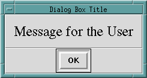

info_dialog/ [1,2,3] — present an information dialog
info_dialog(Msg)
info_dialog(Msg, Title)
info_dialog(Interp, Msg, Title)These information dialogs present popup dialogs, with information and a single button, to the user. The shorter versions are defined by :
info_dialog(Msg)
:-
info_dialog(Msg, 'Info').
info_dialog(Msg, Title)
:-
info_dialog(tcli, Msg, Title).Here Msg, Title, and Interp are all prolog atoms.
The call
?- info_dialog('Message for the User', 'Dialog Box Title').produces this information dialog:

The default Tcl interpreter for info_dialog/[1,2] is tcli as shown above. This interpreter is NOT automatically intialized by alsdev. You must first run init_tk_alslib/0 or init_tk_alslib/1, or run init_tk_alslib/2 with Interp = tcli. If you wish to run info_dialog/3 with Interp bound to a Tcl interpreter I other than tcli, you must first run init_tk_alslib/2 with Interp bound to this same I (only once is necessary).